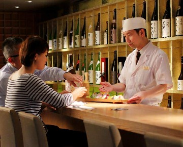
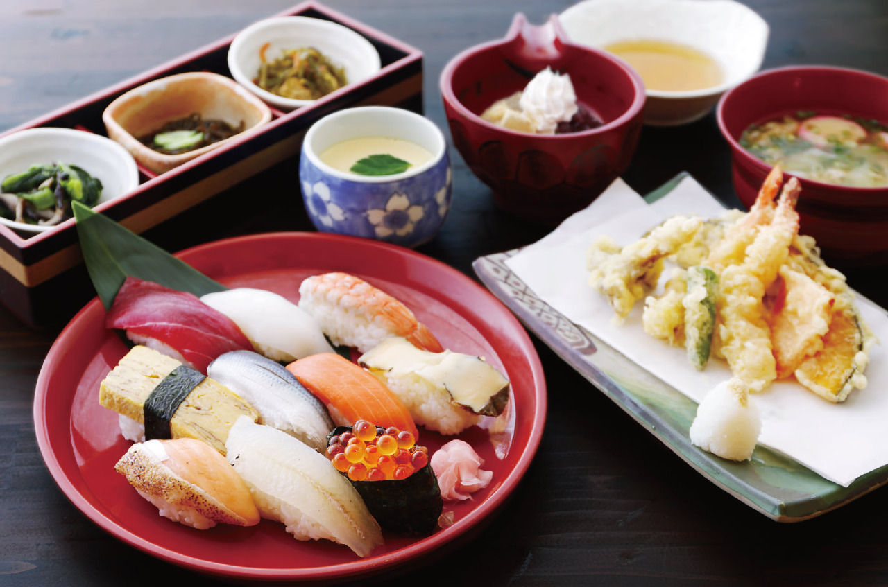

Kikusui is located in one of the most historical and scenic locations in Tottori. Our refined Japanese restaurant, Kikusui, which was established in 1856, is set in a traditional Japanese house with a beautiful garden.

”One time, one encounter” is a cherished belief derived from the spirit of Sado (traditional Japanese tea ceremony) to make your experience here memorable and unique. It is our goal to share the beauty and original culture in Tottori to guests from all over the world.
Ahead of the season, that feel the arrival of the season to use the ingredients of the running, while protecting the characteristics of Japanese cuisine unique, stick to the production area, we offer what good taste. A wholesaler dealing with luxury fresh fish from that you have the parent company, seasonal fish all over the country will come in at best. If you feel like eating a delicious fish dishes, by all means, please come to the Kikusui. In addition to fish, beef Sendai of Japanese beef, chicken is in Daisen of Tottori, vegetables are purchased mainly those of high freshness local.
To happy customers. Absolutely, and if I want to come. Cook of our shop, dish, with such feelings we have cooking sparing no effort. Taste in the tongue, enjoy the eye. Cooking method and to bring out the taste of the material refined appearance of beauty. Make first-class cook, Please enjoy the seasonal cuisine
Overall unified design with a plain wood tones. Tables and chairs, of course, decorative lattice and the partition wall, the store was exhausted attention to reach the private room seats, has been calculated to be able to concentrate in front of the Japanese natural and eyes. And the prestigious height of which you can use to your entertainment and your dinner, your family and friends celebrations and anniversaries, feel free of that can be available in such a time of reward in a year we have a well-balanced fusion.
689-0331
695-21 Ketakacho Hamamura, Tottori-shi, Tottori-ken, japan
TEL 0857-82-0002
e-Mail uthr73@gmail.com
OPEN AM11:00〜AM0:00
© 2018 Kikusui